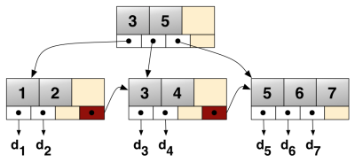
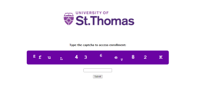

For our final project in Database Design, Prof. Sawin asked us to create an implementation of a BPlus tree from scratch. When he told us this, we didn't even know what a BPlus tree was. He gave us no guidance how how it should be implemented, and the only requirements were that it needed to support node sizes from three to one hundred, it needed to be able to read in a file that specified the node size as well as various operations such as add, search, and print, and it needed to give the correct output. This assignment was deceptively difficult. I made 3 failed attempts to write a working version before I finally sat down the night before it was due and in one ten hour sitting I wrote a version that works perfectly. Debugging this program probably took me six of those hours. Regardless, I'm very proud of the work I did. I'm sure there are much better and cleaner implementations out there, but this one is mine. You can view the files from the project by clicking the links below.
The main class file.For our COVID take home midterm last semester in CISC 340 we were asked to design a stack based 16 bit processor. We were given the instruction set, the I-RAM, D-RAM, and Stack Unit modules, some information about the format of the instructions, how memory was addressed, some explanation about what the operations do, and information about how the new modules we were given worked. I spent a great deal of time putting an incredible amount of polish on this exam and earning my 100% grade. I created multiple draw.io objects from scratch, painstakingly created a custom image highlighting the data path of every instruction, and coded the entire thing up in LaTeX to give it a professional level of polish. I'm very proud of the work I did and I wanted to share the design document I created. Document can be viewed here.

For one of my last projects in Information Security 1, we were asked to make a rudimentary history sniffing website that used disguised links to collect information about the person using the website. For my project I made a fake St. Thomas admissions page with a fake captcha that can detect which department websites the user hadn't visited, and recommend them to the user before letting them proceed to the admissions page. In the process of adding this to my website, I realized that Github doesn't allow php to be used on pages and would give me a 405 error. Because of this, I decided to flatten the landing page, and change the request type on the submit to 'GET' just to give you an idea of how it would work. You can still click the links and go back to the captcha and see how it changes in response to what links you've visited, but you cannot see how the original landing page would modify itself based on that information. The original php code is included in the page source as comments if you would like to see the original code. Page can be viewed here.
{kind=link}